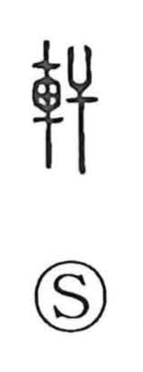

軒

Uncategorized
Kun: noki | On: ken
eaves ・ veranda ・ balustrade ・ carriage
Explanation
A phono-semantic character: 車 marks the domain of vehicles, while 干 supplies the sound. In early lexicography it denotes the two forward shafts of a carriage, curved upward at the front, and by extension a carriage with a covered body. From there the word turns toward architecture: in expressions like 軒懸 it evokes a gallery-like space open on three sides—floor, window openings, and balustrade—hence associations with lofty buildings, as in 高軒, and the spirited, elevated mood captured in 意気軒昂. In later usage it settles on the house itself, coming to mean the eaves—the portion of the roof that projects furthest beyond the wall or pillars.